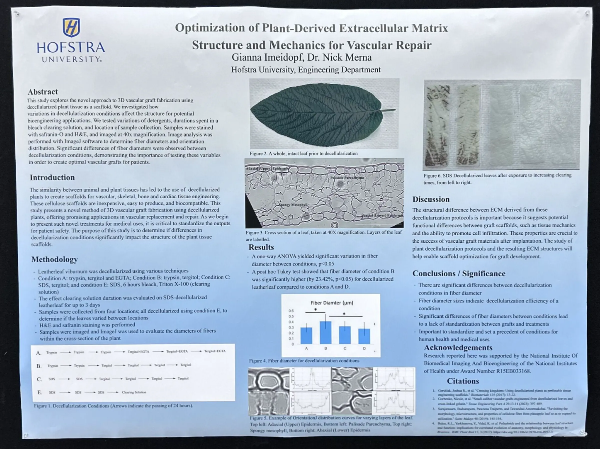

Optimization of Plant-Derived Extracellular Matrix Structure and Mechanics for Vascular Repair
Biomedical Engineering Society (BMES) Annual Meeting, 2024
Abstract
Introduction: In recent years the use of decellularized plant tissue as a biomaterial has become more prevalent due to the remarkable similarities between plant and animal tissues. Decellularized plants have many advantages such as their availability, low cost, and eco-friendly nature of their production. Since the use of plant-derived materials for tissue engineering is so new, it is crucial to begin standardizing these products with the intention of clinical applications in the future. The goal of this study is to evaluate the differences in extracellular matrix structure between plant tissue decellularization techniques to determine the most appropriate method for the development of 3D vascular grafts.
